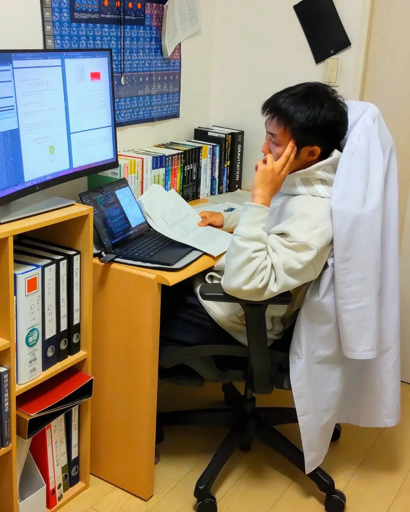

Max Miyazaki
東京都立大学理学研究科物理学専攻素粒子理論研究室修士1年
興味のあることを自由気ままにやるのが好きなその辺に転がっている理系大学院生。物理学の興味関心は量子重力理論や初期宇宙論など標準理論を超えた物理 (BSM : Beyond Standard Model) で理論物理学メイン。多面的なアプローチで新物理の理論を考えたいので、色々と学びたい。なかなか厳しいこと言っている自覚はありますが「物理飽きた」とならない限り挑戦し続け理解を深めていきたいと思う。
研究分野
現在は研究するために基盤学問を学んでいる最中だが、ブラックホール近傍でのアクシオンの振舞いなどに興味を持ってやろうとしている。興味あること
有機化学、生化学、薬理学、救急医学、航空宇宙、実践心理学、外国語、プログラミング、創作活動 (イラスト、動画作成、DTM)、チェス、ピアノ、テニス、武術 etc... ほぼ独学でやっているだけなので、詳しい方がいましたら是非教えてほしいです。
経歴
- 2018年3月 東京都立多摩科学技術高等学校 入学
- 2021年3月 東京都立多摩科学技術高等学校 卒業
- 2021年4月 東京都立大学理学部物理学科 入学
- 2024年4月 東京都立大学理学部物理学科 高エネルギー理論研究室配属
- 2025年3月 東京都立大学理学部物理学科 卒業
- 2025年4月 東京都立大学理学研究科物理学専攻 入学＆素粒子理論研究室配属